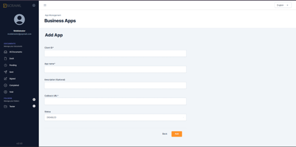
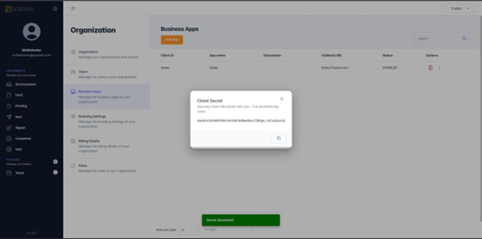

iFrame Integration Guide
This guide explains how to integrate the vScrawl into your application using an iFrame. It covers application registration, credential generation, access token creation, and iFrame implementation.
Register a Business Application
To use the vScrawl iFrame, you must first register a Business Application in the vScrawl.
- Log in to your vScrawl account.
- Navigate to user cog in the left navigation panel > Organization > Business App.
- Click Add.
- Fill in the required fields (App Name, description, etc.).
- Click Add again to save.

Once created, your application will appear in the App List.Generate Client Secret
After registering the application, generate security credentials.
- Locate your application in the App List.
- Click the three dots (options menu).
- Select Generate Secret.
Copy the Client Secret immediately and store it securely.

Important: The Client Secret is shown only once. If lost, you must regenerate it.Generate an Access Token
An Access Token is required to authenticate and load the vScrawl iFrame.
API Details
- Method: POST
- Endpoint:
https://api.yourdomain.com/auth/v1/signin
Request Body (JSON)
{
"grant_type": "CLIENT_CREDENTIALS",
"clientId": "{{app_name}}",
"clientSecret": "{{client_secret}}",
"email": "{{user_email}}"
}
Response
On success, the API returns an access token. Save this token and use it in the iFrame URL.
Embed VScrawl Using an iFrame
Once you have the access token and workflow ID, embed the VScrawl editor in your application using an iFrame.
Sample HTML
<!DOCTYPE html>
<html>
<body>
<h1>My VScrawl iframe</h1>
<iframe
src="https://app.yourdomain.com/documents/prepare?wId={{WORKFLOW_ID}}&clientToken={{ACCESS_TOKEN}}"
width="100%"
height="800px"
frameborder="0"
allow="clipboard-read; clipboard-write; fullscreen"
title="VScrawl Document Editor">
</iframe>
</body>
</html>
Parameters
- WORKFLOW_ID: The workflow ID for the document signing process.
- ACCESS_TOKEN: The access token generated from the signing API.
Best Security Practices
- Never expose Client Secret in frontend code.
- Always generate the Access Token from a secure backend service.
- Rotate secrets periodically.
- Use HTTPS for all API and iframe integrations.
For any issues or questions, contact the vsScrawl support team.